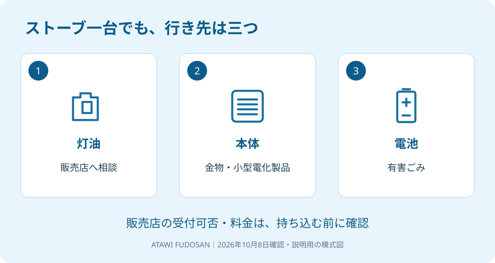

親が施設へ入り、空いた実家の片付けを始める。棚の食器より先に確認したい物が、物置の灯油です。ポリタンクだけでなく、ストーブの中に残っていることも考えておきます。家財を一括で運び出す予定でも、燃料まで同じ扱いにできるとは限りません。
大石浩之（磐田市／不動産業）です。宅地建物取引士として、私は片付けの予定より先に、燃料の引受先を決めるよう案内します。2026年10月8日に確認した磐田市と製品評価技術基盤機構（NITE）の公式情報を使い、家族が動く順番を整理します。
灯油・本体・電池の行き先を分ける
磐田市の「問い合わせの多いごみの出し方」は、灯油や電池が入ったストーブは処理できないと説明しています。2026年9月28日更新の案内では、本体、抜いた灯油、抜いた電池の行き先を分けています。
| 分ける物 | 磐田市の案内 | 家族が先に聞くこと |
|---|---|---|
| 残った灯油 | ガソリンスタンドなどの販売店へ処理を依頼 | 引取りの可否、料金、持込方法 |
| ストーブ本体 | 金物・小型電化製品の日。透明の指定袋、または収集券 | 残油・電池がないこと、地区の収集日 |
| 抜いた電池 | 有害ごみの日 | 電池の種類と状態、出し方 |
本体をごみとして出せても、灯油を入れたまま出せるわけではありません。ストーブ一台を捨てる作業が、三つの行き先の確認になる。ここを見落とすと、片付けの日に本体だけ運び出して終わり、とはいかなくなります。
私は、市が行き先を分けて示している点を評価します。家族は「全部不燃ごみ」と覚える必要がなく、品目ごとに担当を分けられます。搬出を手伝う人へ、この三つの区分を一枚で渡す使い方もできます。
一方で、同じ案内に各販売店の料金や受付条件は載っていません。私は、その空欄を「無料」「予約なしでよい」と埋めないよう注文したい。収集ルールが分かることと、燃料の処分を予約できたことは別です。

残油の場所を確認し、使い切ろうとしない
NITEの2025年10月30日の注意喚起は、石油暖房器具には新しい灯油を使い、前シーズンの灯油を使わないよう案内しています。2026年の新発表ではありません。秋の実家整理で古い燃料を見つけたときにも、確認したい注意です。
「少しだけ残っているから、暖房をつけて空にする」という片付け方を私は勧めません。いつ購入したか不明な灯油を、処分のために使ってよいとは判断できないからです。燃料の状態を見た目だけで決めず、販売店へ相談します。
同じNITEの案内は、灯油とガソリンを別の場所に保管し、誤給油を防ぐことも示しています。給油口のふたが閉まっているか、漏れがないかも点検項目です。中身が分からない容器は、灯油と決めつけてほかの燃料に混ぜないでください。
家族が最初に作るメモは、容器の数、置いてある場所、購入時期が分かるかどうかです。量が不明なら不明と書きます。確認のために無理に移し替えたり、機器を分解したりする必要はありません。抜き方が分からない場合は、機種を伝えて販売店やメーカーに聞きます。
電池にも別の確認があります。充電池や膨張した電池が出てきた場合は、空き家のリチウム電池の処分を参照してください。灯油の話を、そのまま別の危険物の扱いへ広げないためです。
販売店に受付条件を聞いてから動く
空き家の灯油処分では、ガソリンスタンドなどの販売店へ連絡し、持ち込む前に受付の可否を確認します。磐田市の案内だけでは、特定の店舗が引き受けるか、処分にいくらかかるかまでは分かりません。
電話では「実家に残った灯油の処分を相談したい」と用件を先に伝えます。保管年数、分かる範囲の量、容器の状態を説明し、受け入れられるかを聞きます。中身が不明なら、そのことも最初に伝えます。
- 購入店以外でも受け付けるか。予約は必要か。
- 料金はいくらか。量が確定していない場合はどう見積もるか。
- 容器ごと預けるのか。容器を返してもらうのか。
- 持込方法と受付日時に指定があるか。
これは各店の共通ルールを示す一覧ではなく、私が提案する質問です。返答を得てから、運ぶ人と日時を決めます。引取りできないと言われた場合は、持ち込んで交渉するより、市のごみ担当窓口へ次の相談先を確認する方が段取りを組み直せます。
家財の持込みも同じ日に予定するなら、磐田市の粗大ごみ搬入前の確認と分けて計画します。灯油の行き先と、家具の搬入先を一つの予定表に混ぜないことです。片付け業者に頼む場合も、燃料が依頼範囲に含まれるかを聞きます。
残置物の見積りと引渡し条件に残油を書く
実家売却の残置物一覧には、「ストーブ一台」だけでなく「残油あり・処分先未確認」と書くのが私の提案です。残置物とは、家に残る家具や生活用品などです。本体の搬出と燃料の処理を分けると、見積りの抜けを探せます。
見積りで確認するのは、誰が油を抜くのか、燃料を誰が引き受けるのか、容器と本体をどこまで撤去するのかです。完了の報告方法も決めます。「一式」の金額だけでは、家族が最後に何を担当するか分かりません。
買主が設備を使いたいと言っている場合も、残った灯油まで引き取る合意なのかを分けます。売却前に必ず全部捨てる、という結論にはしません。ただ、処理の担当が決まらないまま引渡日を迎える予定は組みません。
残したまま売る条件は、残置物あり・現況で売る場合の整理で扱っています。「現状のまま」という言葉だけで責任分担を済ませず、残す物と撤去する物を特定して契約内容に合わせます。
私は、古いストーブをすぐ撤去するか、買主の希望を待つかには迷います。まだ使える物を捨てる費用も、持ち主の負担だからです。ただし、機器の使い道を保留することと、古い燃料を放置することは分けて考えます。
磐田の実家で今日決める担当と順番
磐田市の空き家で今日できる確認は、残油の場所をメモし、販売店へ電話する担当を一人決めることです。袋井市の物件には磐田市の収集区分をそのまま使わず、所在地の案内を確認してください。
私はこう考えます。家族で片付けの予定表を作るなら、最初の欄にトラックの予約を書きません。まず「灯油の場所」「引受先」「電話する人」の三欄を置きます。量や料金が分からない欄は空欄にし、電話で埋めます。これは実際の相談を再現した話ではなく、私の提案です。半日で全部片付ける約束より、処理できない物を残さない段取りを優先したいのです。
- 残油、本体、電池を一覧で区別する。
- 受付条件を聞いてから搬出日を決める。
- 売却の引渡し条件に撤去担当を合わせる。
富士ヶ丘サービスは、介護と不動産を一体で相談できる、磐田・袋井の地域密着の窓口です。家族が困らない売却のため、私は施設入居後の暮らしと片付けの担当を一緒に整理します。今日、売る結論を出す必要はありません。